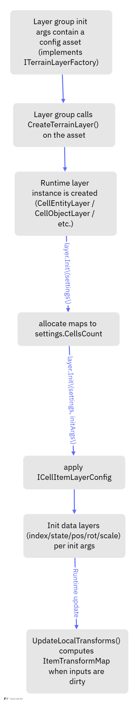

CellItemLayerConfigAsset (and derived layer config assets)
Cell Objects:

Cell Entities:

CellItemLayer initialization (and CellEntityLayer / CellObjectLayer setup)
This page documents how a CellItemLayer (and the two built-in derived layers: CellEntityLayer and CellObjectLayer) is created and initialized, how its per-cell item data is interpreted (CellItemIndex, CellItemState), and how per-cell transforms are computed from ItemPositionMap, ItemRotationMap, and ItemScaleMap.
Referenced implementation files:
Runtime/CellItems/Data/CellItemLayer.csRuntime/CellItems/Data/CellItemLayerConfigAsset.csRuntime/CellItems/Data/ICellItemLayerConfig.csRuntime/CellItems/Jobs/CalculateCellItemTransformsJob.csRuntime/Data/CellItemTransformSettings.cs,Runtime/Data/CellItemTransformSettingsEditor.csRuntime/CellEntities/Data/CellEntityLayer.cs,Runtime/CellEntities/Data/CellEntityLayerConfigAsset.csRuntime/CellObjects/Data/CellObjectLayer.cs,Runtime/CellObjects/Data/CellObjectLayerConfigAsset.csRuntime/CellObjects/Jobs/CalcCellObjectsLODLayerJob.cs
1) High-level lifecycle: how a layer instance is created and initialized
1.1 Layer creation (factory pattern via config assets)
CellItemLayerConfigAsset<TLayer> derives from HexTerrainLayerConfigAsset<TLayer> and therefore implements ITerrainLayerFactory (via the base class). When a terrain layer group is initialized with init-args that implement ITerrainLayerFactory, the group calls CreateTerrainLayer() on the asset to create the runtime layer instance.
Key mechanism (from HexTerrainLayerGroup<TTerrainLayer>.CreateTerrainLayer(initArgs)):
- If
initArgsisITerrainLayerFactory, the group creates the runtime layer using the asset’sCreateTerrainLayer(). - Otherwise, it uses
Activator.CreateInstance<TTerrainLayer>().
This means:
CellEntityLayerConfigAsset.CreateTerrainLayer()returnsnew CellEntityLayer().CellObjectLayerConfigAsset.CreateTerrainLayer()returnsnew CellObjectLayer().
1.2 Layer initialization: Init(settings) then Init(settings, initArgs)
Initialization is always a two-step concept:
Init(HexTerrainSettings settings)allocates/resizes native data layers tosettings.CellsCount.Init<TInitArgs>(HexTerrainSettings settings, TInitArgs initArgs)applies configuration (fill policies, palettes, references, transform settings, etc.).
In CellItemLayer:
Init(settings)allocates the maps (ItemIndexMap,ItemStateMap,ItemPositionMap,ItemRotationMap,ItemScaleMap,ItemTransformMap).Init(settings, initArgs)checks whetherinitArgsimplementsICellItemLayerConfigand then:- stores config fields (
CellItemTransformSettings,SurfaceLayerReference,OverlapSurfaceLayerReference) - initializes the data layers using the config’s init-args:
ItemIndexMapviaInitColoredDataLayer(...)ItemStateMap,ItemPositionMap,ItemRotationMap,ItemScaleMapviaInitDataLayer(...)
- does not initialize
ItemTransformMapfrom config because it’s a derived/computed map.
- stores config fields (
1.3 Initialization flow diagram

flowchart TD
A["Layer group init args contain a config asset (implements ITerrainLayerFactory)"] --> B["Layer group calls CreateTerrainLayer() on the asset"]
B --> C["Runtime layer instance is created (CellEntityLayer / CellObjectLayer / etc.)"]
C --> D["layer.Init(settings): allocate maps to settings.CellsCount"]
D --> E["layer.Init(settings, initArgs): apply ICellItemLayerConfig"]
E --> F["Init data layers (index/state/pos/rot/scale) per init args"]
F --> G["Runtime update: UpdateLocalTransforms() computes ItemTransformMap when inputs are dirty"]
2) CellItemLayer data model: maps and what they mean
CellItemLayer stores one item per cell as several parallel per-cell maps:
| Field | Type | Meaning (per cellIndex) |
Initialized from config? |
|---|---|---|---|
ItemIndexMap |
ColorMapCellValueDataLayer_Int |
“Which item is in this cell?” (index into a per-layer item list) | Yes (CellItemIndexArgs) |
ItemStateMap |
CellValueDataLayer<int> |
“Variant/state of that item” (growth stage, damaged state, etc.) | Yes (CellItemStateArgs) |
ItemPositionMap |
CellValueDataLayer<float3> |
Item local translation (relative to cell) | Yes (CellItemLocalPositionArgs) |
ItemRotationMap |
CellValueDataLayer<quaternion> |
Item local rotation (relative to cell) | Yes (CellItemLocalRotationArgs) |
ItemScaleMap |
CellValueDataLayer<float3> |
Item local scale | Yes (CellItemLocalScaleArgs) |
ItemTransformMap |
CellValueDataLayer<Matrix4x4> |
Computed local transform matrix (derived from pos/rot/scale + layer transform settings) | No (computed) |
SurfaceLayerReference |
HexTerrainLayerReference |
Which surface layer to use for placement (used by derived layers like CellObjectLayer) |
Yes |
OverlapSurfaceLayerReference |
HexTerrainLayerReference |
Optional “overlap” surface. If set, some systems pick the higher surface | Yes |
ItemTransformSettings |
CellItemTransformSettings |
Per-layer transform applied to all items before per-cell transform | Yes |
3) CellItemLayerConfigAsset<TLayer> (base config) and how each field is used
Class: CellItemLayerConfigAsset<TLayer>
File: Runtime/CellItems/Data/CellItemLayerConfigAsset.cs
Interface: ICellItemLayerConfig (Runtime/CellItems/Data/ICellItemLayerConfig.cs)
3.1 Transform settings
_cellItemTranformSettings (CellItemTransformSettingsEditor)
- Inspector-friendly representation of the layer-wide transform.
- Implicitly converts to
CellItemTransformSettings(CellItemTransformSettingsEditor -> CellItemTransformSettings). - Used by
CellItemLayer.Init(settings, initArgs)to setItemTransformSettings.
How it affects initialization and runtime:
- It is not a one-time bake into map data.
- It’s applied during transform calculation as a left-multiply:
ItemTransform = ItemTransformSettings.Transform * TRS(perCellPosition, perCellRotation, perCellScale)
CellItemTransformSettingsEditor fields (inspector)
File: Runtime/Data/CellItemTransformSettingsEditor.cs
| Field | Purpose |
|---|---|
IsAbsoluteValues |
Inspector UI hint (does not affect runtime math by itself). |
ObjectTranslation |
Layer-wide translation applied to every item. |
ObjectRotation |
Layer-wide rotation (Euler angles) applied to every item. |
ObjectScale |
Layer-wide scale applied to every item. |
IsAutoRotation, RotationY, OffsetFromCenter |
Inspector UI parameters (not used in the conversion operator; only relevant if custom editor logic modifies the TRS). |
Runtime representation: CellItemTransformSettings.Transform (a cached Matrix4x4 plus derived Position/Rotation/Scale fields).
3.2 Surface references
_surfaceLayerReference (HexTerrainLayerReference)
Used by systems that need the surface geometry/metrics for placement. In CellObjectLayer, this reference is used to locate a ChunkMeshLayer that exposes CellMetricsMap (which includes per-cell transform aligned to the surface).
_overlapSurfaceLayerReference (HexTerrainLayerReference)
Optional second surface. In CellObjectLayer, when overlap is present, the job chooses whichever surface has the larger cell height:
cellMetrics = overlap.CellHeight > base.CellHeight ? overlap : base
This is how “place on top of whichever surface is higher” is implemented.
3.3 Per-map init args
All init args are applied during CellItemLayer.Init(settings, initArgs):
_cellItemIndexArgs (InitColorMapCellValueDataLayerArgs<int>)
Used to initialize ItemIndexMap via:
HexTerrainLayer.InitColoredDataLayer(ItemIndexMap, args)→ItemIndexMap.InitColorMapDataLayer(args)(extension)
This init step can:
- set
DefaultValue - fill with a constant value (
IsFillWithValue/FillValue) - fill with random values
- apply values from a texture
- configure color map behavior (palette, mode, enabled, default color, min/max)
This matters because ItemIndexMap is also used as a color-map source in view modes and debug/minimap rendering.
_cellItemStateArgs (InitCellValueDataLayerArgs<int>)
Used to initialize ItemStateMap via InitDataLayer(...).
_cellItemLocalPositionArgs (InitCellValueDataLayerArgs<float3>)
Used to initialize ItemPositionMap.
_cellItemLocalRotationArgs (InitCellValueDataLayerArgs<quaternion>)
Used to initialize ItemRotationMap.
_cellItemLocalScaleArgs (InitCellValueDataLayerArgs<float3>)
Used to initialize ItemScaleMap.
4) What “CellItemIndex” and “CellItemState” mean
4.1 CellItemIndex (stored in ItemIndexMap)
A per-cell integer that selects which item definition applies.
Interpretation depends on the derived layer:
CellEntityLayer:CellItemIndexselects whichCellEntitydefinition to use (index into the config’s item list), and thenCellItemStateselects which state prefab within that item.CellObjectLayer:CellItemIndexselects whichCellObjectdefinition to use;CellItemStateselects which state’s visuals/LODs apply.
Conventions in jobs:
- Negative indices are treated as “no item” (jobs early-return or resolve to
Entity.Null).
4.2 CellItemState (stored in ItemStateMap)
A per-cell integer that selects a state/variant of the indexed item.
- Must be within
[0, StatesCountPerItem - 1]for the layer; otherwise state is rejected and nothing is spawned/rendered for that cell.
5) How per-cell transforms are computed
5.1 Inputs (maps)
ItemPositionMap[cellIndex]→float3 positionItemRotationMap[cellIndex]→quaternion rotationItemScaleMap[cellIndex]→float3 scale
5.2 Computation: UpdateLocalTransforms() and CalculateCellItemTransformsJob
File: Runtime/CellItems/Jobs/CalculateCellItemTransformsJob.cs
When any of position/rotation/scale maps are dirty, CellItemLayer.UpdateLocalTransforms() schedules CalculateCellItemTransformsJob.
The job computes, per cell:
Per-cell TRS:
perCell = TRS(position, rotation, scale)
Apply layer-wide settings:
result = ItemTransformSettings.Transform * perCell
Store:
ItemTransformMap[cellIndex] = result
Exact order matters: the settings transform is multiplied on the left, so it’s applied “before” the per-cell transform in matrix composition terms.
5.3 Dirty-chunk behavior (performance + correctness)
UpdateLocalTransforms() only schedules work when:
- any of
ItemPositionMap,ItemRotationMap,ItemScaleMapis dirty.
It also merges dirty chunk grids:
ItemTransformMap.MergeChunkDirtyGrids(ItemPositionMap, ItemRotationMap, ItemScaleMap, ...)
And the job checks ItemTransformMap.ChunkDirtyGrid[chunkIndex] to skip clean chunks.
6) Derived config assets and how they extend initialization
6.1 CellEntityLayerConfigAsset
File: Runtime/CellEntities/Data/CellEntityLayerConfigAsset.cs
Implements: ICellEntityLayerConfig (Runtime/CellEntities/Data/ICellEntityLayerConfig.cs)
Creates: CellEntityLayer
Fields
| Field | Type | Used for |
|---|---|---|
_cellItemPrefabs |
List<CellEntityConfigAuthoring> |
Authoring list of entity prefabs per item index, and per state within that item. |
_statesCountPerItem |
int |
Sets CellEntityLayer.StatesCountPerEntityIndex and defines valid state range & config indexing. |
CellEntityConfigAuthoring layout
File: Runtime/CellEntities/CellEntityConfigAuthoring.cs
Name: label only.States:List<GameObject>whereStates[stateIndex]is the prefab for that state.
Runtime config indexing for entities (flattened states)
CellEntityLayer ultimately needs a flattened, native list of CellEntityStateConfig (Entity Prefab only).
The runtime job CalcCellEntityEntitiesJob uses:
stateConfigIndex = cellEntityIndex * StatesCountPerEntityIndex + cellEntityState;
prefab = CellEntityConfigs[stateConfigIndex].Prefab;
So for StatesCountPerEntityIndex = 8, each item index reserves 8 consecutive state configs.
Note:
CellEntityLayer.Init(settings, ICellEntityLayerConfig args, NativeSlice<CellEntityStateConfig> cellEntityConfigs)expects that flattened list to already be baked/provided by whatever system builds the terrain (ECS baking or runtime conversion).
6.2 CellObjectLayerConfigAsset
File: Runtime/CellObjects/Data/CellObjectLayerConfigAsset.cs
Implements: ICellObjectLayerConfig (Runtime/CellObjects/Data/ICellObjectLayerConfig.cs)
Creates: CellObjectLayer
Fields
| Field | Type | Used for initialization |
|---|---|---|
_bulkRendererAsset |
BulkRendererAsset |
Provides IBulkRenderer used by CellObjectLayer.Render(...). |
_cellItemPrefabs |
List<CellObjectConfigAuthoring> |
Authoring definitions for items/states/LODs. |
_LODSettings |
List<CellObjectLayerLODSettings> |
Per-layer distance/zoom ranges for selecting which LOD layer to render. Copied into native list at init. |
_bakedVisualItemSettings |
List<CellObjectVisualItemSettings> |
Baked render-item settings & local transforms per visual. Copied into AllCellObjectVisuals. |
_bakedStatesLODSettings |
List<CellObjectLODSettings> |
Baked mapping from (item index, state, lod) → range of visuals. Copied into AllCellObjectsLODSettings. |
_statesCountPerItem |
int |
Sets CellObjectLayer.StatesCountPerObject. Also affects indexing into baked LOD settings. |
_maxSubmeshesPerCell |
int |
Sets CellObjectLayer.MaxSubmeshesPerCell and therefore capacities of render collections. |
Baking (Bake())
CellObjectLayerConfigAsset.Bake() populates:
BakedVisualItemSettings: a flat list of visuals (mesh+material+submesh, plus a transform).BakedStatesLODSettings: a flat list ofCellObjectLODSettingsrecords describing where each (item,state,lod) lives inBakedVisualItemSettings.
The baking iterates:
- each object index (item index)
- each state index
0..StatesCountPerItem-1 - each lod index
0..LODSettings.Count-1
And records:
VisualsStartIndexVisualsCount
Runtime indexing for objects (item + state + lod)
In CalcCellObjectsLODLayerJob, the lookup is:
index = cellObjectIndex * StatesCountPerObject * LODsCount + cellObjectState * LODsCount + lodIndex
This must match the bake order.
7) How CellObjectLayer uses ItemTransformMap + surface metrics to compute final transforms
CellObjectLayer uses CellItemLayer.ItemTransformMap (computed local item transform) and the surface layer’s HexCellMetrics to align items to the terrain.
In CalcCellObjectsLODLayerJob (no overlap case), per cell:
- Determine if chunk is visible.
- Read
cellObjectIndexandcellObjectState. - Find the
CellObjectLODSettingsfor(index,state,lod). - Compose transforms:
cellTransform = cellMetrics.CellTransform_Local * CellItemLocalTransforms[cellIndex]final = chunkTransform * cellTransform * visuals.Transform
- Add the final transform to the renderer’s
NativeParallelMultiHashMap.
Where:
cellMetrics.CellTransform_Localcomes from the surfaceChunkMeshLayer.CellMetricsMapand typically encodes “place at cell center + rotate to match surface”.CellItemLocalTransforms[cellIndex]is the output ofUpdateLocalTransforms().visuals.Transformis the baked per-renderer transform from the authored prefab’s hierarchy.
Overlap surface behavior
If OverlapSurfaceLayerReference is set and the overlap layer exists, the job picks the higher of the two surfaces per cell (by CellHeight_Points) before building cellTransform.
8) Practical setup guides
8.1 Recommended defaults for a typical “empty cell means no item” layer
These values are applied via the config asset fields:
CellItemIndexArgs:IsFillWithValue = trueFillValue = 0(simply set 0 prefabs for cell item at index 0)
CellItemStateArgs:IsFillWithValue = trueFillValue = 0
CellItemLocalPositionArgs:IsFillWithValue = trueFillValue = (0,0,0)
CellItemLocalRotationArgs:IsFillWithValue = trueFillValue = identity quaternion
CellItemLocalScaleArgs:IsFillWithValue = trueFillValue = (1,1,1)
This ensures ItemTransformMap can be computed immediately and deterministically.
8.2 Setting up a CellEntityLayer
Step 1: Create the config asset
Use Unity’s create menu:
Fwt/HexTerrains/Cell Items/CellEntity Layer Config Asset
This creates a CellEntityLayerConfigAsset.
Step 2: Configure base CellItemLayer fields
In the config asset inspector:
- Set
SurfaceLayerReference(if your entity systems use surface alignment;CellEntityLayeritself doesn’t render likeCellObjectLayer, but you may still want consistent placement in your entity logic). - Set
OverlapSurfaceLayerReferenceif you want “place on the highest surface” semantics elsewhere. - Set
CellItemTransformSettingsto apply a uniform offset/rotation/scale to all entities in this layer.
Step 3: Configure entity prefabs per index/state
In Cell Item Prefabs (List<CellEntityConfigAuthoring>):
- Each list element index is the
CellItemIndex. - Inside each element’s
Stateslist, each element index is theCellItemState.
Example mapping:
- If a cell has
ItemIndexMap[cell] = 5andItemStateMap[cell] = 2:- the layer should spawn the prefab at
CellItemPrefabs[5].States[2](after baking to ECS entity prefabs).
- the layer should spawn the prefab at
Step 4: Set States Count Per Item
Set States Count Per Item to the maximum states count your cell items have.
- The runtime job rejects states
>= StatesCountPerItem.
Step 5: Authoring for visibility (optional)
If you want terrain visibility toggles to also enable/disable entity renderers, add CellEntityAuthoring on the prefab and populate ChildRenderers.
File: Runtime/CellEntities/CellEntityAuthoring.cs
8.3 Setting up a CellObjectLayer
Step 1: Create the config asset
Use Unity’s create menu:
Fwt/HexTerrains/Cell Items/Cell Object Layer Config
This creates a CellObjectLayerConfigAsset.
Step 2: Assign BulkRendererAsset
Set:
Bulk Renderer Asset(the asset implementingIBulkRenderer)
This is required for Graphics.DrawMeshInstanced based rendering.
Step 3: Configure LOD ranges (layer-wide)
Set LOD Settings (List<CellObjectLayerLODSettings>):
- Each element is a “render LOD i when normalizedCameraZoom is between MinDistance and MaxDistance”.
Notes:
- Ensure ranges do not overlap and have no gaps, otherwise some zoom levels will render nothing or multiple ambiguous LODs.
Step 4: Author prefabs (items and states)
CellObjectLayerConfigAsset.CellItemPrefabs is a list of CellObjectConfigAuthoring:
- Each entry index is
CellItemIndex. - Each entry’s
Stateslist index isCellItemState. - Each
States[state]is aCellObjectPrefabAuthoringMonoBehaviour.
CellObjectPrefabAuthoring setup (per state)
File: Runtime/CellObjects/CellObjectPrefabAuthoring.cs
- Add
CellObjectPrefabAuthoringto the root GameObject for that state. - Create one child (or hierarchy) per LOD and add
CellObjectPrefabLODAuthoringto each LOD root. - For each
CellObjectPrefabLODAuthoring, assignRenderers(or use CollectRenderers).
CellObjectPrefabLODAuthoring extracts render data by registering renderers with the bulk renderer during baking:
File: Runtime/CellObjects/CellObjectPrefabLODAuthoring.cs
Step 5: Set counts and limits
States Count Per Itemmust match your authoring expectations and the values written intoItemStateMap.Max Submeshes Per Cellmust be high enough for the maximum number of render items that any authored state+LOD can produce.
Step 6: Bake
Use the config asset context menu Bake (or rely on OnValidate() which calls Bake()):
- This populates
Baked Visual Item SettingsandBaked States LOD Settings.
These baked arrays are what CellObjectLayer.Init(settings, initArgs) copies into native lists used by jobs.
9) Common pitfalls / validation checklist
StatesCountPerItem:- Must be consistent with your state indices; invalid states are ignored.
SurfaceLayerReference:- For
CellObjectLayer, must point to aChunkMeshLayerthat has a validCellMetricsMap, otherwise cell objects won’t compute placement correctly.
- For
- Object baking:
- If
BulkRendereris null orLODSettingsis empty,BakeCellObject(...)returns early and nothing is baked.
- If
- LOD selection:
- If your camera zoom normalization doesn’t match
MinDistance/MaxDistancesemantics, you’ll render the wrong LOD or none.
- If your camera zoom normalization doesn’t match